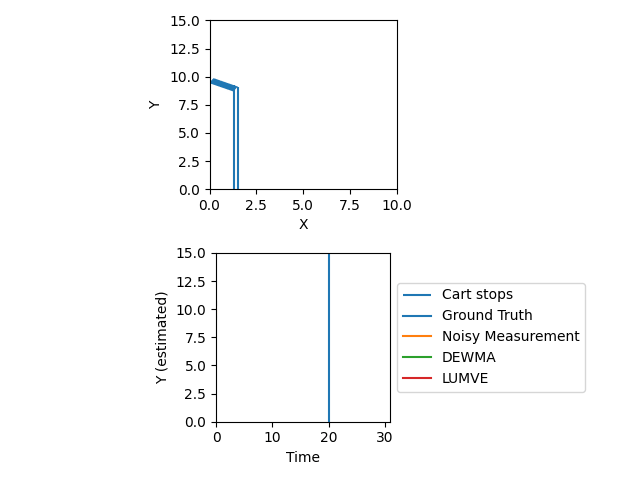

Welcome to my third Kalman Filtering post! We left off on a cliffhanger. How will the LUMVE algorithm perform against Double EWMA?

Pretty well! In the graph, DEWMA starts out with a better estimate than LUMVE, but LUMVE stays pretty consistently closer to ground truth by being initially more willing to update based on new measurements and later more reluctant to fit noise. Of course, DEWMA has tunable parameters that let it be more willing to update, too. In fact, this graph is in some ways a good illustration of why you might prefer DEWMA: it has just two simple formulas, but it performs almost as well as the Kalman filter on this example! DEWMA has two parameters you need to define, $\alpha$ and $\beta$ - in setting up a Kalman filter even on a 2D state space, you might easily define 10 magic numbers without seeing a huge improvement. But you do get a payoff for all of those constants in the form of greater accuracy and flexibility. Additionally, this system is probably way more friendly to DEWMA than you’ll typically see in real life: while KF may leave you wondering just how many first-order Taylor approximations we should really be letting Rudolph Kalman get away with here, those approximations are usually good enough in practice (when they’re not, nonlinear extensions of KF like EKF and UKF are often effective). What’s often not good enough is DEWMA’s approach of effectively ignoring the measurement and system dynamics functions. If we were dealing with, for example, a pendulum, DEWMA would have a really hard time, while KF would handle it like a champ (probably - though with oscillators you also have to take into account questions like your sampling rate vs the oscillation frequency).
You probably noticed that I started using LUMVE and KF interchangably: this is because they’re mathematically the same thing! It’s time for us to show this, completing our derivation of the Kalman filter.
The Kalman Filter
The issue with LUMVE is that it does two $n \times n$ inverses every step ($n$, conventionally, is the dimension of the state space). Inverting matrices is a difficult problem (it typically takes $O(n^3)$ time), and while our $n$ is small for these examples, you can start getting high-dimensional $n$ much faster than you might think. For example, on a plane you might want to estimate a 6D pose, plus velocities and accelerations in each of these dimensions, and parameters of your physical model like the thrust being delivered by each engine, the angles of the flaps and ailerons, 3D wind velocity, 3D plane center of mass, etc. You’re plausibly looking at a 50-dimensional state space. Now, this probably doesn’t matter on a plane because you can bring up a beefy computer that can invert a 50x50 matrix inside of a couple of microseconds, but what if you also had power and weight requirements and wanted to run this on an embedded device? Finding an efficient formulation would be very useful.
For this, we turn to Schur’s identity, which states that:
$$(A - BD^{-1}C)^{-1} = A^{-1} + A^{-1}B(D - C A^{-1}B)^{-1}CA^{-1}$$
Which, for our purposes, means:
$$\hat{P} = (H^T R^{-1}H + \bar{P}^{-1})^{-1} = \bar{P} - \bar{P}H^T(R + H \bar{P} H^T)^{-1} H \bar{P}$$
The first part of the second term is called the Kalman gain matrix and is denoted $K$:
$$\tag{0} K = \bar{P}H^T(R + H \bar{P} H^T)^{-1}$$ $$\hat{P} = \bar{P} - KH \bar{P} = (I - KH)\bar{P}$$
Now, when we get an $\bar{x}$ and $\bar{P}$, we can use:
$$\hat{x} = \hat{P}(H^T R^{-1}y + \bar{P}^{-1}\bar{x}) = \hat{P}H^T R^{-1}y + \hat{P}\bar{P}^{-1}\bar{x}$$
Substituting $\hat{P} = (I - KH)\bar{P}$:
$$\tag{1} \hat{x} = \hat{P}H^T R^{-1}y + (I - KH)\bar{P}\bar{P}^{-1}\bar{x} $$
Noting from our original expression for $K$ that:
$$\bar{P}H^T = KR + KH \bar{P} H^T$$ $$(I - KH)\bar{P} H^T = KR$$
From our derivation of $\hat{P}$, we had: $\hat{P} = (I - KH)\bar{P}$. From this, we see:
$$\hat{P}H^T = KR$$
Substituting this into (1), we have:
$$ \hat{x} = KR R^{-1}y + (I - KH)\bar{P}\bar{P}^{-1}\bar{x} $$
Cancelling:
$$ \hat{x} = Ky + (I - KH)\bar{x} $$
Distributing $\bar{x}$ and then factoring out $K$:
$$\tag{2} \hat{x} = \bar{x} + K(y - H\bar{x}) $$
This is the fundamental update of the Kalman filter!!! The last two equations also make it more clear that the Kalman filter is basically doing the more rigorous version of EWMA, where $K$ is analogous to the EWMA credence parameters (eg: $\alpha$), except that $K$ gets updated in a statistically rigorous way to reflect a current credence.
The Three Equations of Kalman Filtering
$$K = \bar{P}H^T(R + H \bar{P} H^T)^{-1}$$ $$\hat{P} = (I - KH)\bar{P}$$ $$\hat{x} = \bar{x} + K(y - H\bar{x})$$
Kalman vs LUMVE
Efficiency: The Kalman filter and the LUMVE with a priori give the same result (we have just seen how the Kalman filter is simply a different formulation of LUMVE).
Examining the Kalman Filter, though, we see that in (0), our definition of $K$, the term that’s being inverted is very low-dimensional (it’s $m \times m$, where $m$ is the dimensionality of the measurement vector - $m$ is almost always smaller, and often significantly smaller, than $n$). Since we don’t need to take any inverses anywhere else in our three fundamental equations, we’ve completely avoided the need for an $n \times n$ inverse (as compared to LUMVE).
Over these 3 posts, we’ve derived the Kalman filter from scratch and compared it to the much simpler EWMA/DEWMA estimation algorithms. I’ve tried to take a much simpler approach than the rigorous literature I’ve seen on KF without eliding too much in the way of mathematical detail. If you find any issues with it, I’d love it if you could file an issue on the site Github.